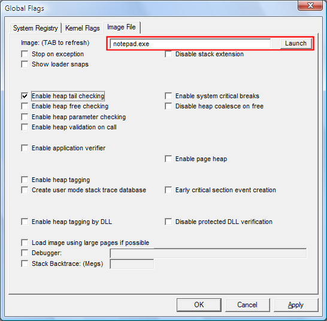

This feature runs a program once with the specified flags. These settings affect only the instance of the program launched. They are not saved in the registry.
 To launch a program with flags
To launch a program with flags
-
Click the Image File tab.
-
In the Image box, type the name of an executable file or DLL, including the file name extension, and any commands for the program, and then press the TAB key.
This activates the Launch button and the check boxes on the Image File tab.
-
Set or clear a flag by selecting or clearing the check box associated with the flag.
-
Click the Launch button.
The following screen shot shows the Launch button on the Image File tab in Windows Vista.

Flags set in the dialog box are used for the launched instance even when they are not image file flags.